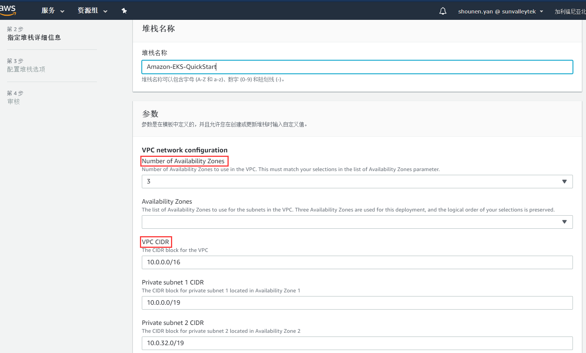
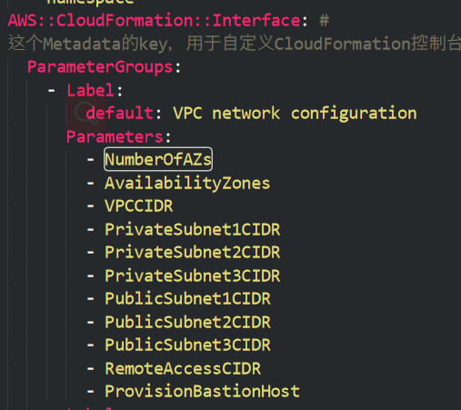
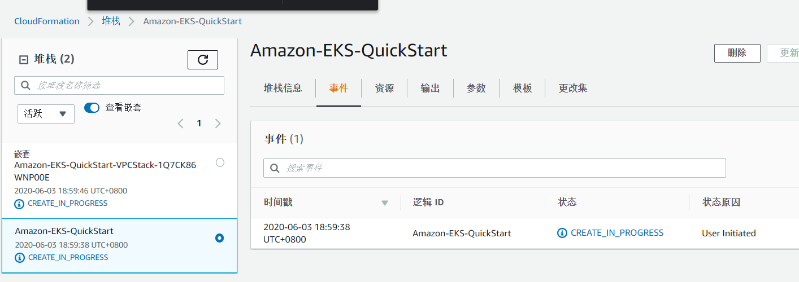

AWS Elastic Kubernetes Service(EKS) 快速入门(Quick Start)的指南
科技的进步一直在改变生产方式，软件工程的方法论近年来的其中一个重要主题是DevOps，公有云自然也是全面拥抱这个概念的。
公有云上有种类繁多的各种服务，DevOps类的服务自然也是值得重点关注的对象。
“最佳实践”这个关键词，我想大家都经常听说，许多做得好的软件服务商都会提供关于自家产品的最佳实践相关的文档。
那什么是AWS 快速入门(Quick Start)呢？
AWS Quick Start 是一种适用于 AWS 云中关键工作负载的自动化参考部署。
每个 Quick Start 都使用有关安全性和可用性的 AWS 最佳实践来启动、配置和运行在 AWS 上部署特定工作负载所需的 AWS 计算、网络、存储和其他服务。Quick Start 是一种加速器，可将数百个手动程序简化为几个步骤，其特点是速度快，成本低且可定制，功能齐全，且专为生产而设计。
Quick Start 包括：
- 适用于部署的参考架构
- 可用于自动化和配置部署的 AWS CloudFormation 模板（JSON 或 YAML 脚本）
- 详细说明了具体架构和安装启用问题，且提供了自定义部署说明的部署指南
Quick Start 还包括一些集成，这些集成扩展了 Amazon Connect 提供的基于云的联系中心功能与 APN 合作伙伴提供的关键服务和解决方案，用于客户关系管理 (CRM)、人力资源优化 (WFO)、分析、统一通信 (UC) 及其他使用案例。
所以简单来说，Quick Start就是AWS对于自身认为重要的服务，提供的符合最佳实践和集成了DevOps工具的服务。
举个例子，你想在亚马孙上创建一个符合最佳实践的VPC（虚拟私有网络），也可以找到相应的Quick Start来“一键创建”。
我认为，对于公有云的使用者来说，Quick Start的意义，除了是方便用户去创建、初始化服务之外，更加是学习使用公有云服务的一个最佳途径之一。
因为Quick Start中往往使用了具有实际生产可用的示例配置，以及以代码的形式来展现出这些配置项，对于用户来说就非常清晰，有助于更好地理解架构的逻辑。
这里要额外提一点，AWS提供了AWS CloudFormation以便用户去“编排”云服务，对应地在开源方案中也有一个叫Terraform的编排工具，阿里云就是其支持者之一，当然AWS上也可以使用Terraform。
相对于AWS闭环生态，阿里云的策略看起来是拥抱开原方案。
开源云服务编排工具 – Terraform，可以了解一下。
也是声明式API。
https://www.terraform.io/
阿里云官方文档中有Terraform专区：
https://help.aliyun.com/document_detail/146291.html?spm=a2c4g.11174283.3.8.19ec11e90z3tae
AWS上也可以使用，参考可以在这里找：
https://www.terraform.io/docs/providers/aws/index.html
AWS EKS Quick Start 的部署内容
使用 Quick Start 自动设置的 Amazon EKS环境，包括下列内容：
- 一个跨三个可用区的高度可用的架构。
- 一个根据 AWS 最佳实践配置有公有子网和私有子网的 Virtual Private Cloud(VPC)，用于在 AWS 上为您提供您自己的虚拟网络。
- 在公共子网中设置托管 NAT 网关，以允许对私有子网中的资源进行出站互联网访问。
- 在一个公共子网内的 Auto Scailing 组中设置 Linux 堡垒主机，以允许对私有子网中的Amazon Elastic Compute Cloud(Amazon EC2)实例进行入站安全Shell(SSH)访问。堡垒主机还配置有用于管理 Kubernetes 集群的 Kubernetes kubectl 命令行界面。
- 提供 Kubernetes 控制平面的 Amazon EKS 集群。
- 在私有子网中设置一组 Kubernetes 节点。
上述内容摘自官网简介
关于 EKS 的 CloudFormation 模板解析
AWS EKS Quick Start使用这个CloudFormation模板来新建VPC并初始化EKS。
下面是我对于此模板内容的解析：
模板中涉及到 VPC 相关的配置
- 可用区1的私有子网默认CIDR为：10.0.0.0/19，也就是
10.0.0.1 ~ 10.0.31.254这 8190 个 IP。 - 可用区2的私有子网默认CIDR为：10.0.32.0/19，也就是
10.0.32.1 ~ 10.0.63.254这 8190 个 IP。 - 可用区3的私有子网默认CIDR为：10.0.64.0/19，也就是
10.0.64.1 ~ 10.0.95.254这 8190 个 IP。
- 可用区1的公有子网默认CIDR为：10.0.128.0/20，也就是
10.0.128.1 ~ 10.0.143.254这 4094 个 IP。 - 可用区2的公有子网默认CIDR为：10.0.144.0/20，也就是
10.0.144.1 ~ 10.0.159.254这 4094 个 IP。 - 可用区3的公有子网默认CIDR为：10.0.160.0/20，也就是
10.0.160.1 ~ 10.0.175.254这 4094 个 IP。
- VPCCIDR：默认值为
10.0.0.0/16，也就是10.0.0.1 ~ 10.0.255.254这 65534 个 IP。 - NumberOfAZs： 默认值为
3。
模板中涉及到访问 EKS 相关的配置
RemoteAccessCIDR
允许这个CIDR访问EKS中的node，可以设置为包含VPC的所有网段的CIDR。
EKSPublicAccessCIDRs
允许这个CIDR访问EKS的API，这个CIDR必须是公网的。默认为0.0.0.0/0。
由于Kubernetes API一般是基于双向TLS认证的，所以基本上开放给公网也没有什么问题。EKSPublicAccessEndpoint
是否开启暴露给公网的EKS API Gateway。相当于创建一个load balancer，分配一个公网IP，这个load balancer绑定了Kubernetes的API Service。
EKSPrivateAccessEndpoint
是否开启暴露给VPC的EKS API Gateway。相当于原生Kubernetes初始化后的kubernetes这个Service。
AdditionalEKSAdminUserArn
这个IAM user拥有EKS的admin权限。
注意： EKS 只是使用 IAM 验证AdditionalEKSAdminRoleArn
这个IAM role拥有EKS的admin权限。
ProvisionBastionHost
是否自动创建堡垒机。
模板中涉及到 EKS control plain 相关的配置
KubernetesVersion
默认为”1.16”，可选值为：”1.13”, “1.14”, “1.15”, “1.16”。
模板中涉及到 EKS node 相关的配置
NodeInstanceType
这些
实例类型(t3.micro, t3.small等)可以作为 node 的实例类型可选项。NumberOfNodes
初始化时 node 的数量，注意：默认是3，也就是 HA 架构下 control plane 的 node 数量。
MaxNumberOfNodes
集群 node 的最大数量。
ManagedNodeGroup
这个
Managed Node Group在后台利用EC2 Auto Scailing group功能。建议开启此功能，此功能是使用EKS Cluster Autoscaler的前提。
而EKS Cluster Autoscaler是HPA的隐性前提，因为当Node不够的时候如果不会自动加入新的Node，则HPA也无法完成。ClusterAutoScaler
这个功能结合上面的 ManagedNodeGroup 来实现 EKS 集群 Node 的水平扩展。
但是不知道为什么这里设置成不能两个功能都开启，可能是因为Auto Scaler的子template中有关于Managed Node Group的操作。
模板中涉及到监控相关的配置
MonitoringStack
目前只有
Prometheus + Grafana这一个选项。
模板中涉及到 EKS 其他 addons 和 AWS 其他服务集成相关的配置
ALBIngressController
是否自动部署一个ALB Ingress Controller(类似于Traefik)。
EfsStorageClass
是否自动创建一个 EFS 卷并创建 EFS StorageClass。
FargateNamespaces
Fargate 是 AWS 的 serverless 服务，以容器为载体。EKS 中可以设置专属于 Fargate 服务的 Namespace，适用于一些离线或批处理任务，比如 Jenkins 的构建任务。
查看具体模板以及子模板内容
首先你应该打开CloudFormation的文档看看模板内可填写的字段(field)，和可以使用的内置函数、best practice。
然后可以浏览一下这里面的 template，这些就是 QuickStart EKS 所用到的 template 了。 https://github.com/aws-quickstart/quickstart-amazon-eks/tree/master/templates
其中入口 tempalte 是 amazon-eks-master.template.yaml。
EKS QuickStart 部署记录
按照 AWS EKS QuickStart 的 Deployment steps 的提示，一步一步做就好了。
以下的实例是新建一个 VPC 的实例，一个 Region 中默认允许创建 5 个 VPC，也可以修改这个 quota。
考虑到已经存在的 VPC 和 EKS 的 VPC 可能需要建立内网连接，所以在规划 EKS VPC 的 subnet 时，需要避免和已有的 VPC 的 CIDR 重叠。
关于 Parameters 和 Options 可以参考文档来作为修改的依据：
https://docs.aws.amazon.com/quickstart/latest/amazon-eks-architecture/step-2.html
可以看到，在 CloudFormation 上创建 Stack 的时候，Parameters 的顺序就与 Template 中
Metadata.AWS::CloudFormation::Interface中定义的顺序一致。如下图：

在 CloudFormation Web-UI 中填写完 EKS 的模板中定义的 Parameters 和 Options之后，会出现一个确认页面，并且可以生成一个 URL 用来保存这次填写的信息，以便以后再次生成同一个配置集合的 Stack。
创建过程中
如下图：

EKS QuickStart 注意事项
当前时间为2020-6-5。
目前我发现以下问题：
EKS QuickStart 的入口 tempalte 中定义了
Managed Node Group不能和AutoScaler同时启用，但是看 EKS 的官方文档，我目前的理解是其实Managed Node Group是AutoScaler的前提，可以关注此 issue。目前启用
AutoScaler会在创建的过程中由于 AutoScaler 的 ImagePullBackoff 问题导致部署失败，所以最好是手动部署比较好，可以参考 EKS 的官方文档，然后修改镜像 repo。这个问题是由于 AutoScaler 的 template 中的
Mappings部分中，定义了“如果 EKS 的版本是 1.16 则拉取 AutoScaler 的 ImageTag 为 v1.16.8 ”，由于当下(2020-6-9)，AutoScaler 的这个 Tag 拉取不了，导致了此问题。
今天刚刚由此 commit 修复了，将 AutoScaler 的 ImageTag 改成了 v1.16.5。